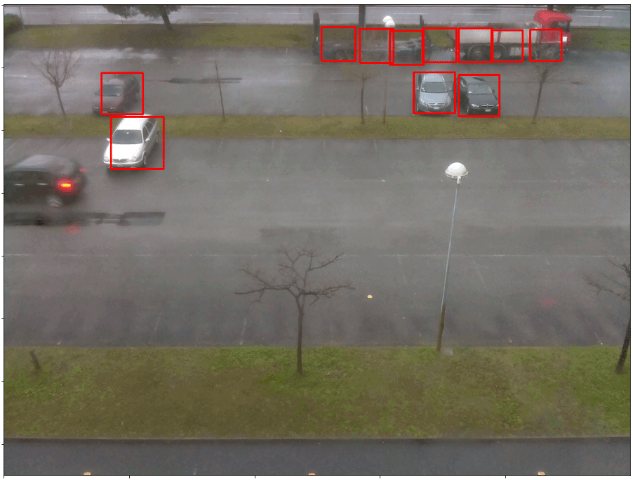
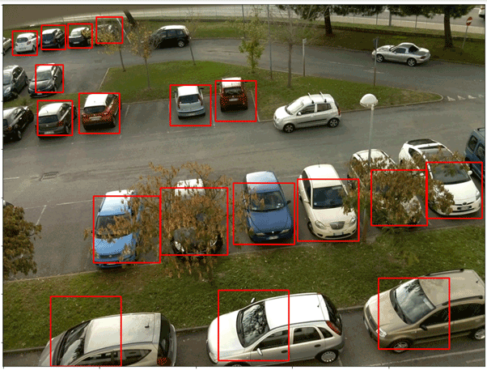
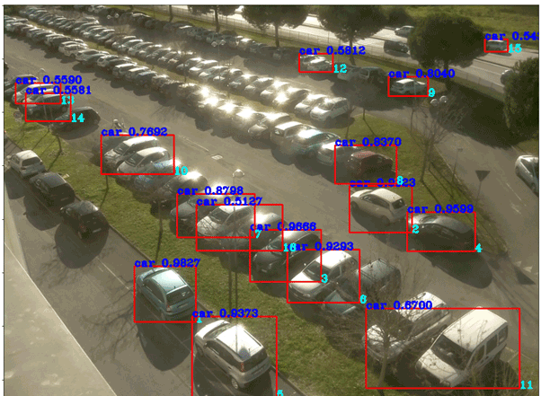
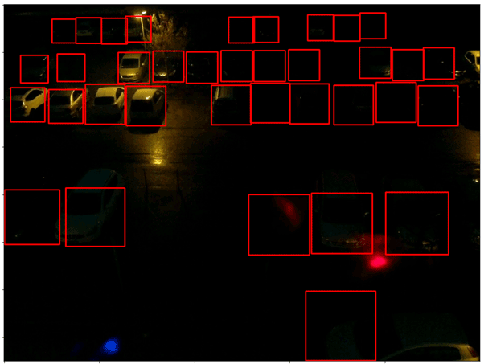
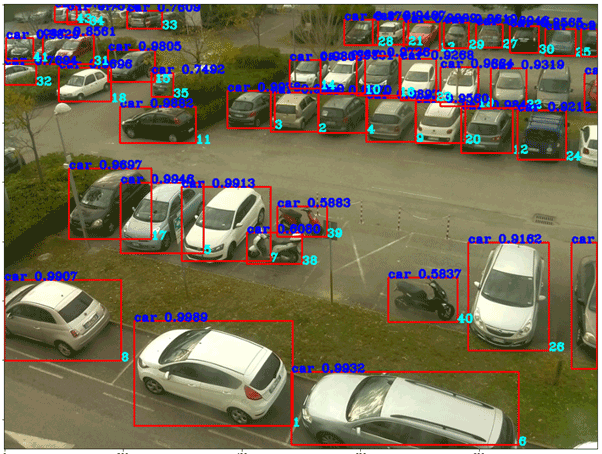

P5: Counting Cars
Contributors: Anamarija Čavka, Marina Banov, Luka Rogelj
Section 1
The task
The task
- Task: count all cars in the image, give every car a unique id (number)
- Detection involves localization of the objects (at bounding box level) and classification
- Evaluate detection performance in terms of average precision (AP)
- Input: a digital image or video streams of cars in a parking lot
- Output: detection of cars in the image (bounding box with confidence score)
- CNR+EXT Park Dataset
The dataset
- Images of the parking lot:
- Conditions: sunny, overcast, rainy
- Month: November 2015, December 2015, January 2016, February 2016
- Nb. of cameras: 9
- Hour: 7:00-18:00
- Overall: 4323 images
1
Section 2
Model
Model
Model of choice - YOLOv3
- Limited time frame for our project
- Available online implementation in TF 2.0
- Pretrained Darknet weights
- Could not retrain even few layers due to Google Colab limited resources and frequent runtime errors
- COCO dataset has cars
2
Section 3
Problems
Problems
- Mismatch between project objective and dataset original use-case
- Original use-case: Parking Lot Occupancy
- Project Objective: Detect and count cars in image
- Ill-fitting boxes → Issues with IoU
- Unmarked cars → Overestimating our FPs
- Marked negatives → Overestimating our FNs
- Dataset not suitable for training!
- Would not generate well!









3
Section 4
Evaluation
Evaluation
Precision and recall by camera
Mean Average Precision
Camera 2
- Unmarked parking spots
Camera 8

4
Section 5
Conclusions
Conclusions
- GIGO - Garbage In, Garbage Out
- Dataset is unsuitable!
- YOLOv3 performs quite well
- Penalized by poor ground truth
- YOLOv3 shows some systematic errors
- Occluded vehicles are not detected
- Sun glare reduces detections
- Blocked/Blurred camera reduces detections
- Large groups of vehicles detected with one bounding box
- Night time performance is bad
- FPs on horizontally parked motorcycles
Future work
- Use YOLO to remark this dataset & Publish a paper :)
- And then manually fix whatever YOLO missed
- Train >=3 models and use agreement as measurement of success
- 2 our of 3, 3 out of 4
- Try multiple models
- Use pretrained models, but retrain some layers
- Include files with marked parked horizontal motorcycles to combat FPs
- Include more data with sun glare, night-time, occluded vehicles, blurred vehicles, etc.
- Train on this dataset and evaluate how it generalizes on other car datasets
5